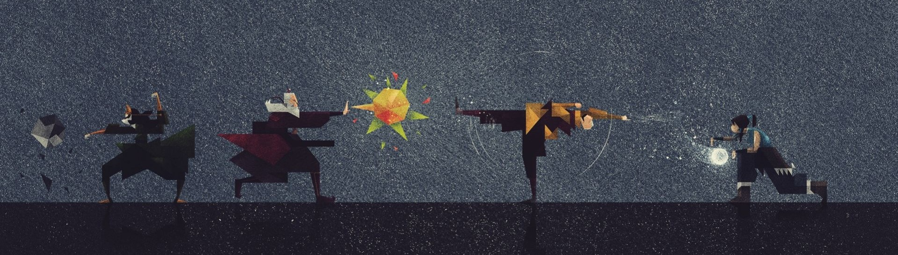

Avatar: The Last Airbender is set in a world—adjacent to a parallel spirit world—that is home to humans and hybrid animals. Human civilization is divided into four nations, named after the four classical elements: the Water Tribes, the Earth Kingdom, the Fire Nation, and the Air Nomads. Each nation has a distinct society in which select people, known as "benders" (waterbenders, earthbenders, firebenders and airbenders), have the ability to telekinetically manipulate and control their nation's element using martial arts.
Only the Avatar has the ability to bend all four elements. The Avatar, who may be male or female, is an international arbiter whose duty is to maintain harmony among the four nations, and act as a mediator between humans and spirits. When the Avatar dies, their spirit is reincarnated into the next of the four nations in what is known as the Avatar cycle: the Fire Nation, Air Nomads, Water Tribe and Earth Kingdom. An Avatar is required to master each bending art, beginning with the element of their home nation, and proceeding to learn the others in the order of the Avatar cycle. Avatars also possess the ability to enter a condition known as the Avatar State, in which they gain the knowledge and abilities of all past Avatars. Unfortunately, if an Avatar were ever to be killed while in the Avatar State, the reincarnation cycle would end and the avatar would never again be reborn.
